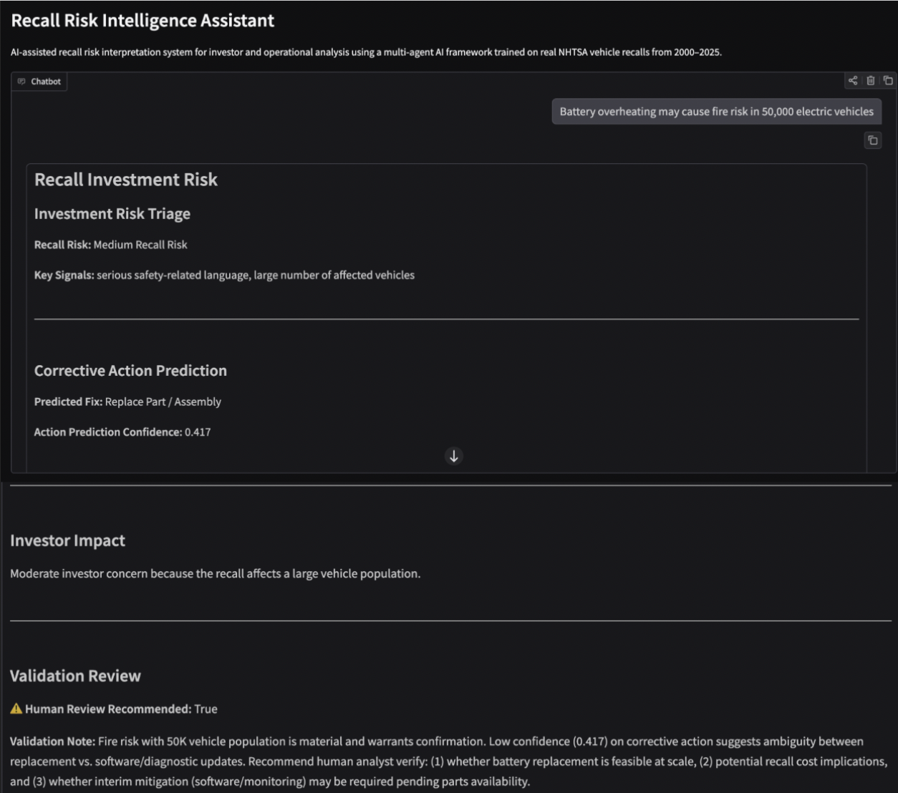

Interface Design
Designed the chatbot experience and organized outputs into clear investor-focused sections.
MANHATTAN UNIVERSITY BUSINESS ANALYTICS COMPETITION · FINALIST
An investor-focused AI chatbot that translates complex vehicle recall information into accessible risk insights and decision-support outputs.
For the finalist phase of the Manhattan University Business Analytics Competition, my team analyzed vehicle recall activity across U.S. and non-U.S. automakers using NHTSA recall records, consumer complaint reports, manufacturer information, and market-response data.
The project examined how recall activity, affected vehicle volume, component categories, severity, and repeated recalls differed across manufacturers and influenced investor response.
My primary individual contribution was developing the interactive Recall Risk Intelligence chatbot. The purpose of the tool was to turn technical model outputs into clear, structured information that an investor could understand and use.
Designed the chatbot experience and organized outputs into clear investor-focused sections.
Converted machine-learning predictions into understandable risk levels, corrective actions, and confidence information.
Structured the tool to communicate investor impact, validation notes, and whether human review was recommended.
The user enters information describing a vehicle recall or potential safety issue.
The system evaluates the issue using model outputs, severity signals, and recall characteristics.
The chatbot returns risk triage, corrective-action predictions, investor impact, and validation guidance.
To make the machine-learning models more accessible, I developed an interactive chatbot that translates technical model outputs into clear, investor-focused insights. The interface presents recall risk, corrective-action predictions, investor impact, and validation notes in one place.

INTERACTIVE DEMO
Scan the QR code to access the full demonstration of the Recall Risk Intelligence Assistant.
Prototype note: This chatbot is an early-stage prototype developed under the time constraints of the competition's finalist phase. Some responses may be limited or inconsistent. I am interested in continuing to refine the model integration, improve response reliability, and expand the tool's functionality.
Electrical and software issues became increasingly prominent during the 2020–2025 period.
Investors appeared to react more strongly to the number of affected vehicles than to severity alone.
Market reactions differed between U.S. and non-U.S. automakers across the analysis.
This project taught me that building an effective AI tool requires more than generating accurate predictions. The information also needs to be organized, explained, and presented in a way that helps users make better decisions.
Developing the chatbot strengthened my ability to translate technical analytics into an intuitive user experience while keeping the final output focused on a clear business objective.